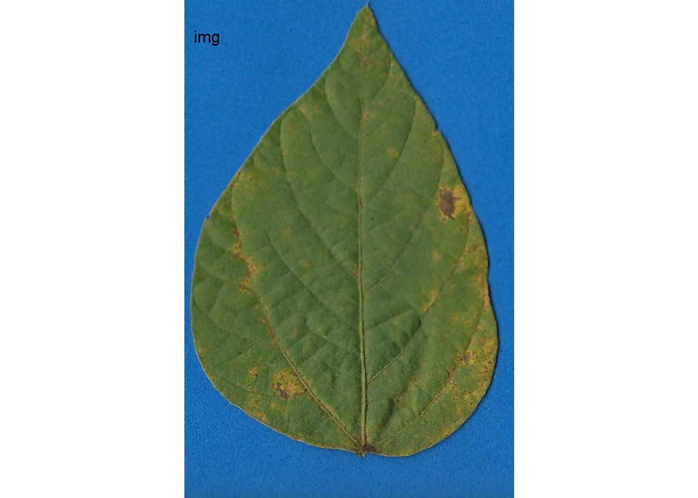
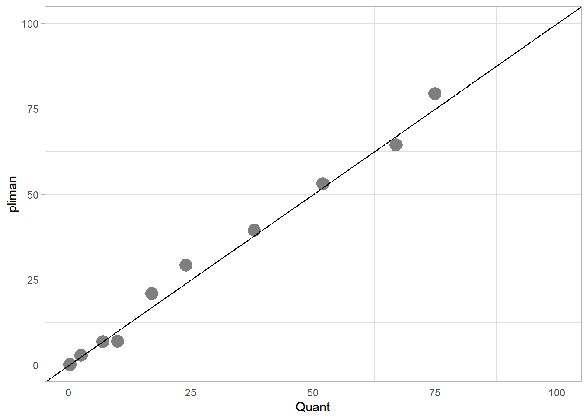

library(pliman)
h <- image_import("imgs/sbr_h.png")
s <- image_import("imgs/sbr_s.png")
b <- image_import("imgs/sbr_b.png")4 Image analysis
4.1 The actual severity measure
Among the various methods to express plant disease severity, the percent area affected (or symptomatic) by the disease is one of the most common, especially when dealing with diseases that affect leaves. In order to evaluate whether visual estimates of plant disease severity are sufficiently accurate (as discussed in the previous chapter), one requires the actual severity values. These are also essential when creating Standard Area Diagrams (SADs), which are diagrammatic representations of severity values used as a reference either before or during visual assessment to standardize and produce more accurate results across different raters (Del Ponte et al. 2017).
The actual severity values are typically approximated using image analysis, wherein the image is segmented, and each pixel is categorized into one of three classes:
- Diseased (or symptomatic)
- Non-diseased (or healthy)
- Background (the non-plant portion of the image)
The ratio of the diseased area to the total area of the unit (e.g., the entire plant organ or section of the image) yields the proportion of the diseased area, or the percent area affected (when multiplied by 100). Researchers have employed various proprietary or open-source software to determine the actual severity, as documented in a review on Standard Area Diagrams (Del Ponte et al. 2017).
In this section, we will utilize the measure_disease() function from the pliman (Plant IMage ANalysis) R package (Olivoto 2022) to measure the percent area affected. The package was compared with other software for determining plant disease severity across five different plant diseases and was shown to produce accurate results in most cases (Olivoto et al. 2022).
There are essentially two methods to measure severity. The first is predicated on image palettes that define each class of the image. The second relies on RGB-based indices (Alves et al. 2021). Let’s explore the first method, as well as an interactive approach to setting color palettes.
4.2 Image palettes
he most crucial step is the initial one, where the user needs to correctly define the color palettes for each class. In pliman, the palettes are separate images representing each of the three classes: background (b), symptomatic (s), and healthy (h).
The reference image palettes can be constructed by manually sampling small areas of the image and creating a composite image. Naturally, the results may vary depending on how these areas are selected. A study that validated pliman for determining disease severity demonstrated the effect of different palettes prepared independently by three researchers (Olivoto et al. 2022). During the calibration of the palettes, examining the processed masks is crucial to create reference palettes that are the most representative of the respective class.
In this example, I manually selected and pasted several sections of images representing each class from a few leaves into a Google slide. Once the image palette was ready, I exported each one as a separate PNG image file (JPG also works). These files were named: sbr_b.png, sbr_h.png, and sbr_s.png. They can be found here in this folder for downloading.

Now that we have the image palettes, we need to import them into the environment, using image_import() function for further analysis. Let’s create an image object for each palette named h (healthy), s (symptoms) and b (background).
We can visualize the imported image palettes using the image_combine() function.
image_combine(h, s, b, ncol =3)
4.3 Measuring severity
4.3.1 Single image
To determine severity in a single image (e.g. img46.png), the image file needs to be loaded and assigned to an object using the same image_import() function used to load the palettes. We can then visualize the image, again using image_combine().
Tip
The collection of images used in this chapter can be found here.
img <- image_import("imgs/originals/img46.png")
image_combine(img)
Now the engaging part starts with the measure_disease() function. Four arguments are required when using the reference image palettes: the image representing the target image and the three images of the color palettes. As the author of the package states, “pliman will take care of all the details!” The severity is the value displayed under ‘symptomatic’ in the output.
set.seed(123)
measure_disease(
img = img,
img_healthy = h,
img_symptoms = s,
img_background = b
)
$severity
healthy symptomatic
1 92.68077 7.319234
$shape
NULL
$statistics
NULL
attr(,"class")
[1] "plm_disease"4.3.2 Multiple images
Measuring severity in single images is indeed engaging, but we often deal with multiple images, not just one. Using the above procedure to process each image individually would be time-consuming and potentially tedious.
To automate the process, pliman offers a batch processing approach. Instead of using the img argument, one can use the pattern argument and define the prefix of the image names. Moreover, we also need to specify the directory where the original files are located.
If the user wants to save the processed masks, they should set the save_image argument to TRUE and also specify the directory where the images will be saved. Here’s an example of how to process 10 images of soybean rust symptoms. The output is a list object with the measures of the percent healthy and percent symptomatic area for each leaf in the severity object.
pliman <- measure_disease(
pattern = "img",
dir_original = "imgs/originals" ,
dir_processed = "imgs/processed",
save_image = TRUE,
img_healthy = h,
img_symptoms = s,
img_background = b,
verbose = FALSE,
plot = FALSE
)
severity <- pliman$severity
severity img healthy symptomatic
1 img11 70.79655 29.2034481
2 img35 46.94177 53.0582346
3 img37 60.47440 39.5256013
4 img38 79.14060 20.8594011
5 img46 93.14958 6.8504220
6 img5 20.53175 79.4682534
7 img63 97.15669 2.8433141
8 img67 99.83720 0.1627959
9 img70 35.56684 64.4331583
10 img75 93.04453 6.9554686When the argument save_image is set to TRUE, the images are all saved in the folder with the standard prefix “proc.”

Let’s have a look at one of the processed images.

4.4 How good are these measurements?
These 10 images were previously processed in QUANT software for measuring severity which is also based on image threshold. Let’s create a tibble for the image code and respective “actual” severity - assuming QUANT measures as reference.
library(tidyverse)
library(r4pde)
quant <- tribble(
~img, ~actual,
"img5", 75,
"img11", 24,
"img35", 52,
"img37", 38,
"img38", 17,
"img46", 7,
"img63", 2.5,
"img67", 0.25,
"img70", 67,
"img75", 10
)We can now combine the two dataframes and produce a scatter plot relating the two measures.
dat <- left_join(severity, quant)Joining with `by = join_by(img)`dat %>%
ggplot(aes(actual, symptomatic)) +
geom_point(size = 3, shape = 16) +
ylim(0, 100) +
xlim(0, 100) +
geom_abline(slope = 1, intercept = 0) +
labs(x = "Quant",
y = "pliman")+
theme_r4pde()
The concordance correlation coefficient is a test for agreement between two observers or two methods (see previous chapter). It is an indication of how accurate the pliman measures are compared with a standard. The coefficient is greater than 0.99 (1.0 is perfect concordance), suggesting an excellent agreement!
library(epiR)
ccc <- epi.ccc(dat$actual, dat$symptomatic)
ccc$rho.c est lower upper
1 0.9940835 0.9774587 0.9984566In conclusion, as mentioned earlier, the most critical step is defining the reference image palettes. A few preliminary runs may be necessary for some images to ensure that the segmentation is being carried out correctly, based on visual judgment. This is not different from any other color-threshold based methods, where the choices made by the user impact the final result and contribute to variation among assessors. The drawbacks are the same as those encountered with direct competitors, namely, the need for images to be taken under uniform and controlled conditions, especially with a contrasting background.
4.5 Creating palettes interactively
Pliman offers another function measure_disease_iter() which allows the user to pick up samples in the image to create the color palettes for each required class (background, healthy and symptoms). Check the video below.
Alves, K. S., Guimarães, M., Ascari, J. P., Queiroz, M. F., Alfenas, R. F., Mizubuti, E. S. G., et al. 2021. RGB-based phenotyping of foliar disease severity under controlled conditions. Tropical Plant Pathology. 47:105–117 Available at: http://dx.doi.org/10.1007/S40858-021-00448-Y.
Del Ponte, E. M., Pethybridge, S. J., Bock, C. H., Michereff, S. J., Machado, F. J., and Spolti, P. 2017. Standard Area Diagrams for Aiding Severity Estimation: Scientometrics, Pathosystems, and Methodological Trends in the Last 25 Years. Phytopathology®. 107:1161–1174 Available at: http://dx.doi.org/10.1094/PHYTO-02-17-0069-FI.
Olivoto, T. 2022. Lights, camera, pliman! An R package for plant image analysis. Methods in Ecology and Evolution. 13:789–798 Available at: http://dx.doi.org/10.1111/2041-210X.13803.
Olivoto, T., Andrade, S. M. P., and M. Del Ponte, E. 2022. Measuring plant disease severity in R: introducing and evaluating the pliman package. Tropical Plant Pathology. 47:95–104 Available at: http://dx.doi.org/10.1007/s40858-021-00487-5.